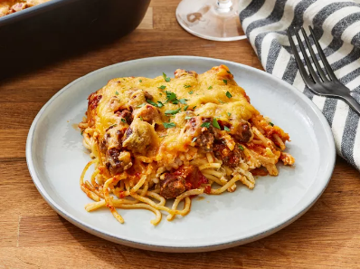

Million Dollar Spaghetti

Description:
Million dollar spaghetti is the perfect combination of noodles, lean ground beef sauce, cottage cheese, cream cheese, and sour cream. This million dollar spaghetti dish features a beefy, creamy tomato sauce that’s impossible to resist.
Ingredients:
- 8-ounce package of spaghetti
- a pound of lean ground beef
- a jar of store-bought spaghetti sauce
- a stick of sliced butter
- A mixture of cottage cheese, cream cheese, and sour cream
- Shredded Cheddar cheese
Steps:
- Boil the spaghetti in salted water, then drain and set aside.
- Cook the beef on the stove and discard the grease. Transfer to a bowl and mix in the spaghetti sauce.
- Prepare the baking dish, then spread half of the noodles in the bottom.
- Top with the mixture of cottage cheese, cream cheese, and sour cream.
- Cover with remaining spaghetti and butter.
- Pour the beef mixture over the spaghetti and spread in an even layer.
- Bake for 30 minutes, top with Cheese, and continue baking until the cheese is melted.